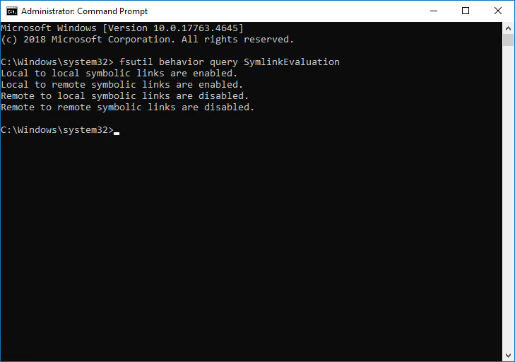

Symptom
The following error is prompted in Health Log for your File Server monitoring plan:
Error: 0x80049610 The symbolic link cannot be followed Make sure the local-to-local, local-to-remote, remote-to-local, and remote-to-remote symbolic link evaluations are enabled on the computer that hosts Netwrix Auditor Server.
The error shows only during State-in-Time data collection.
Cause
Symbolic links (symlinks) are disabled or misconfigured.
Resolution
Enable all symbolic links types.
-
On your Netwrix Auditor server, run the elevated Command Prompt line, and execute the following command:
fsutil behavior query SymlinkEvaluationOnce executed, you'll see the settings for symbolic links (enabled or disabled).
 -
To enable the symlink type, use the following command:
fsutil behavior set SymlinkEvaluation R2L:1The R2L:1 stands for remote to local enabled. You can change R to L and vice versa to enable the disabled symlink.
Learn more about fsutil syntax in fsutil behavior ⸱ Microsoft 🡥.